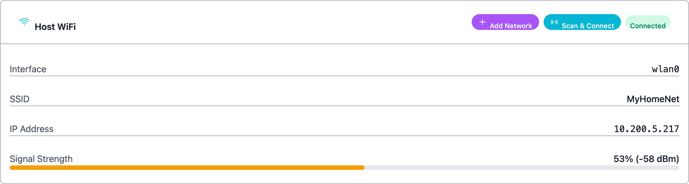
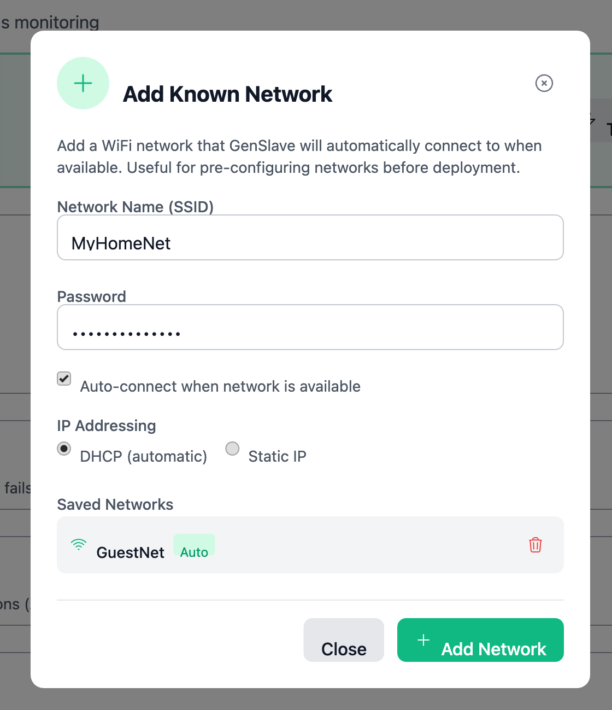
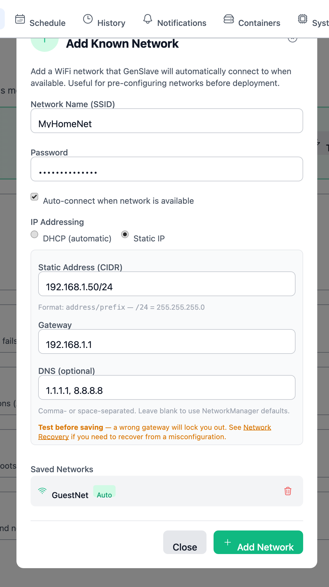
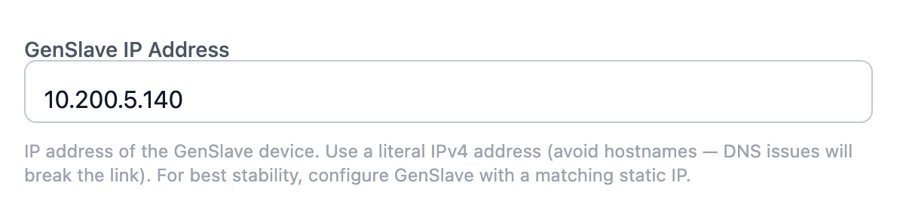
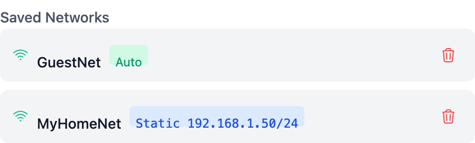

Network Configuration¶
This page covers everything related to setting up the network connections that GenMaster and GenSlave use — both their own WiFi profiles and the link between them. If you've just locked yourself out by saving a bad configuration, jump straight to Network Recovery.

Where to configure¶
There are three places network configuration lives in the UI:
| Where | What it controls |
|---|---|
| System → Network → Add Known Network | GenMaster's own WiFi profiles. Used when GenMaster needs to remember additional networks (a backup hotspot, a different SSID at a second site, etc.). |
| GenSlave → Add Network | GenSlave's WiFi profiles. The GenMaster UI sends these to the slave over the API, then the slave's NetworkManager saves them. |
| Settings → GenSlave Configuration → GenSlave IP Address | The IP GenMaster uses to reach GenSlave. Discussed in detail further down. |
All three flows go through the same backend pattern (NetworkManager + nmcli) and share the same field set.
DHCP vs static — when to choose which¶
| You should pick... | When |
|---|---|
| DHCP (default) | You don't have a strong reason to assign a fixed IP. Your router hands out an address; the device uses it. Most home installs. |
| Static IP | You need a stable, predictable address — typically because the GenSlave IP field on GenMaster needs to point at it consistently across reboots, your router's DHCP lease pool is small or unreliable, or you've reserved part of the subnet for fixed devices. |
The two devices don't have to match — GenMaster can be DHCP while GenSlave is static, or vice versa. What matters for GenMaster→GenSlave communication is whether the address GenMaster has saved for GenSlave stays correct.
DHCP reservations are an alternative to static IPs
Most home routers let you reserve a specific IP for a specific MAC address. The Pi gets the same IP every time but the assignment lives on the router, not the Pi. If your router supports it, this is often easier than configuring a static IP on the Pi itself — and you can't lock yourself out with a typo in the gateway.
Field reference¶
When you click Add Network, the modal looks like this in DHCP mode:

Switching the IP Addressing toggle to Static IP reveals three more fields:

| Field | Required? | Notes |
|---|---|---|
| Network Name (SSID) | Yes | The WiFi network's broadcast name. Max 32 characters. |
| Password | Yes | WPA/WPA2 passphrase. 8–63 characters. |
| Auto-connect | No (default on) | If enabled, the device connects to this network automatically whenever it's in range. Disable for "backup-only" profiles. |
| IP Addressing | Yes | DHCP (router assigns the IP) or Static IP (you assign it). |
| Static Address (CIDR) | When static | e.g. 192.168.1.50/24. CIDR format — see the table below. |
| Gateway | When static | The router's IP on this subnet. e.g. 192.168.1.1. |
| DNS (optional) | When static | Comma- or space-separated list of DNS server IPs. e.g. 1.1.1.1, 8.8.8.8. Leave blank to inherit NetworkManager's defaults. |
CIDR cheat sheet¶
| CIDR | Netmask | Hosts per subnet | Use when |
|---|---|---|---|
/24 |
255.255.255.0 |
254 | Default for most home networks (e.g. 192.168.1.0/24). |
/23 |
255.255.254.0 |
510 | Two adjacent /24s combined. |
/16 |
255.255.0.0 |
65,534 | Larger flat networks. |
/22 |
255.255.252.0 |
1022 | Mid-size flat networks. |
If you don't know what your router uses, log into its admin page and look at the LAN configuration. Don't guess.
How GenMaster reaches GenSlave¶
GenMaster talks to GenSlave over a single TCP connection, configured in Settings → GenSlave Configuration → GenSlave IP Address.

The IP you put there can be one of two kinds, and the choice has consequences.
Option A — Local LAN IP¶
- Looks like
192.168.1.50(or whatever your local subnet uses) - Works when both Pis sit on the same local network: same router, same /24
- Lowest latency, no third-party dependency
- Breaks the moment the two Pis are on different networks the local router can't bridge
Option B — Tailscale IP¶
- Looks like
100.x.y.z— Tailscale's CGNAT range - Works regardless of where each Pi is: different rooms, different houses, different countries
- Adds the Tailscale daemon as a moving part (auth refresh, occasional relay hops)
- Requires both Pis joined to the same tailnet
Which should I use?¶
| Situation | Recommendation |
|---|---|
| Both Pis on the same WiFi router, same subnet | Either works. Local IP is simpler. |
| Both at home but on different VLANs / SSIDs that don't route to each other | Tailscale |
| Pis at different sites (different ISPs, different properties) | Tailscale |
| You also want to reach GenMaster remotely from off-site | Tailscale (it gives you both local-link and admin remote access for free) |
Advanced users: routed RFC 1918 subnets
If you control your own router and know what a static route is, you can put GenMaster on 192.168.1.0/24 and GenSlave on 192.168.2.0/24 and add routing entries on your router so the two subnets reach each other directly. Both subnets are RFC 1918 (private), so this works without NAT or a VPN.
This is not the recommended path. If the terms "static route," "next-hop," or "RFC 1918" aren't familiar, ignore this option and either put both Pis on the same subnet or use Tailscale.
Always use a literal IP, never a hostname¶
The GenSlave IP Address field accepts anything, but you should always type a literal IPv4 address (e.g. 192.168.1.50 or 100.x.y.z). Hostnames like genslave.local work until DNS breaks — and when DNS breaks, GenMaster loses its slave, the heartbeat stops, and the failsafe trips.
Cross-device reachability — what to watch for¶
Add Known Network is a profile-save action: it tells the device "remember this network so you can auto-connect when it's in range." It does not change the device's currently-active network, and it does not automatically check whether the proposed static IP will be on the same subnet as the other device. That's intentional — Add Known Network is for pre-staging profiles (e.g. before shipping a unit to a client site), where the current network has nothing to do with the target network.
The rule you have to eyeball yourself:
- When the saved profile eventually activates and both devices are connected to that network, they must either share the same subnet (so the local link works) OR have Tailscale running on both (so the tunnel works regardless of subnet).
- If you assign GenMaster
192.168.1.10/24and GenSlave192.168.2.10/24on the same network, and neither device has Tailscale, the two won't be able to reach each other. The heartbeat will fail, the failsafe will trip.
The Add Known Network form shows an inline advisory of this rule under the static-IP fields. Read it before saving.
Future feature
GenMaster will eventually warn you automatically when an action changes the device's currently-active network into a subnet that breaks the link with the other device. That check isn't wired in yet (the implementation lives in app/services/network_check.py, ready for the future "change active network" feature). For now, when you save a profile, mentally check it against where the other device will be.
Reading the saved networks list¶
After you add a network, it appears in the Saved Networks list inside the same modal. Static-IP profiles are tagged with the address they're configured for, so you can tell them apart from DHCP profiles at a glance.

| Badge | Meaning |
|---|---|
| (no badge) | DHCP — IP assigned by the router |
Static 192.168.1.50/24 |
Static IP — address shown is what NetworkManager will assign when connecting to this network |
Auto |
Auto-connect is enabled |
Delete an unwanted profile with the trash icon. To change a profile, delete it and re-add it — there's no in-place edit (yet).
Worked scenarios¶
Scenario 1 — Single home, same WiFi (most common)¶
Both Pis on MyHomeNet (192.168.1.0/24). Router is 192.168.1.1.
- GenSlave's WiFi: GenSlave page → Add Network. SSID
MyHomeNet, password, IP Addressing Static, address192.168.1.50/24, gateway192.168.1.1. Save. - GenMaster's settings: Settings → GenSlave Configuration → GenSlave IP Address →
192.168.1.50. Save. - GenMaster's own WiFi: typically already configured during initial setup; if you need a backup network, System → Add Known Network with auto-connect off.
Both devices end up on 192.168.1.0/24 when this profile activates — local link works.
Scenario 2 — Two sites, Tailscale link¶
GenMaster at home (192.168.1.x), GenSlave at a remote cabin (192.168.50.x). Both joined to the same tailnet.
- Tailscale on both Pis: see Tailscale VPN setup. Note GenSlave's Tailscale IP — something like
100.105.42.7. - GenSlave's WiFi: configure normally for the cabin's local network (DHCP is fine — it's a stable home network at the cabin).
- GenMaster's settings: GenSlave IP Address →
100.105.42.7(the Tailscale IP, not the local IP). Save.
The two devices are on completely different LANs but the link runs over Tailscale — local subnets don't matter.
Scenario 3 — Same building, different VLANs (advanced)¶
GenMaster on the management VLAN (192.168.10.0/24), GenSlave on the IoT VLAN (192.168.20.0/24), with a router that routes between the two via static routes.
- GenSlave's WiFi: Add Network with static IP
192.168.20.50/24, gateway192.168.20.1. - GenMaster's settings: GenSlave IP Address →
192.168.20.50. - Eyeball the subnets yourself.
192.168.10.xand192.168.20.xare different /24s. If you've correctly set up the router-side static routes between those VLANs, the local link works. If you haven't, the link will break — your router needs work first. See your router's docs.
What's next¶
- Locked out by a bad change? Network Recovery.
- Setting up Tailscale for the first time: Tailscale VPN.
- Where the GenSlave IP Address field lives in context: GenSlave page.